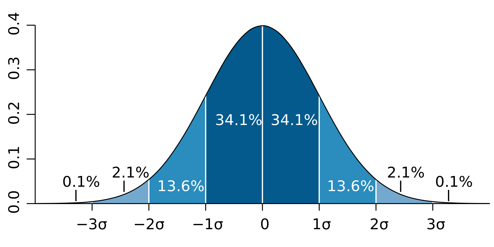
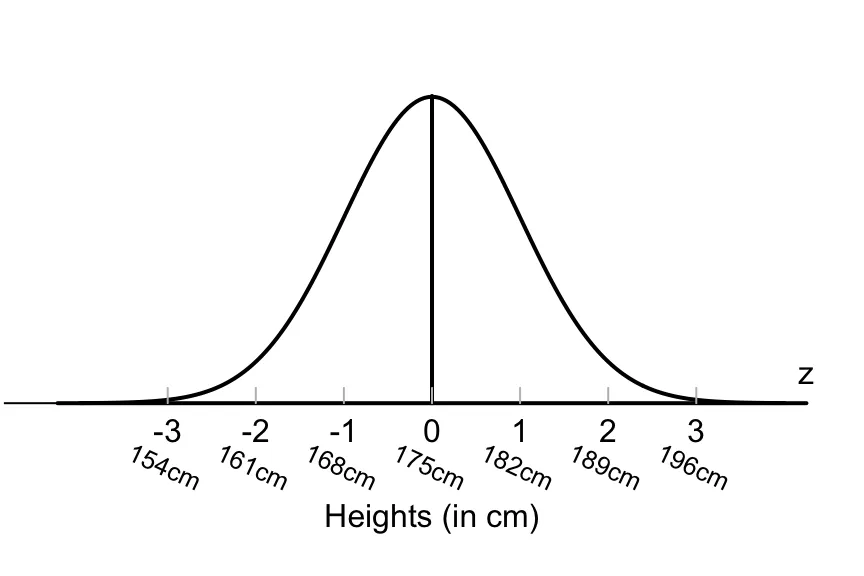

Statistics Course 2023/24
MSc in Cybersecurity - Sapienza Università di Roma
Riccardo Tuzzolino
Th3: The Gaussian Distribution Meaning, Derivations, Simulations
In statistics, a normal distribution or Gaussian distribution is a type of continuous probability distribution for a real-valued random variable. It is named after the German mathematician Carl Friedrich Gauss.
In a normal distribution, data is symmetrically distributed with no skew. When plotted on a graph, the data follows a bell shape, with most values clustering around a central region and tapering off as they go further away from the center.

The red curve is the standard normal distribution
Normal distributions have key characteristics that are easy to spot in graphs:
- The mean determines where the peak of the curve is centered. Increasing the mean moves the curve right, while decreasing it moves the curve left;
- The standard deviation stretches or squeezes the curve. A small standard deviation results in a narrow curve, while a large standard deviation leads to a wide curve. (The variance should be regarded as something like the average of the difference of the actual values from the average. A larger variance indicates a wider spread of values.)
The Gaussian distribution is often used in statistics and int the natural and social sciences to represent real-valued random variables whose distributions are not known. All kinds of variables in natural and social sciences are normally or approximately normally distributed. Height, birth weight, reading ability, job satisfaction, or SAT scores are just a few examples of such variables.
Its importance is partly due to the central limit theorem, which states that the sum of many independent and identically distributed (i.i.d.) random variables tends toward a normal distribution, even if the original variables themselves are not normally distributed.
A continuous random variable \(X\) is said to be a standard normal (standard Gaussian) random variable, written as \(X \sim N(0, 1)\), if its PDF (probability density function) is given by
\[f(x) = \frac{1}{\sqrt{2\pi}}exp{\Bigl\{-\frac{x^2}{2}\Bigl\}},\:\:for\:\:all\:\:x \in \mathbb{R}.\]
The parameter \(\mu\) is the mean of the distribution, while the parameter \(\sigma\) is its standard deviation. The variance of the distribution is \(\sigma^2\).
In a normal distribution, data is symmetrically distributed with no skew. When plotted on a graph, the data follows a bell shape, with most values clustering around a central region and tapering off as they go further away from the center.
The red curve is the standard normal distribution
Normal distributions have key characteristics that are easy to spot in graphs:
- The mean (average), median (midpoint) and mode (most frequent observation) are exactly the same.
- The distribution is symmetric about the mean: half the values fall below the mean and half above the mean.
- The distribution can be described by just two parameters: the mean \(\mu\) and the standard deviation \(\sigma\).
- The mean determines where the peak of the curve is centered. Increasing the mean moves the curve right, while decreasing it moves the curve left;
- The standard deviation stretches or squeezes the curve. A small standard deviation results in a narrow curve, while a large standard deviation leads to a wide curve. (The variance should be regarded as something like the average of the difference of the actual values from the average. A larger variance indicates a wider spread of values.)
Empirical rule
For the normal distribution, the values less than 1 standard deviation away from the mean account for 68.27% of the set: \[P(\mu-\sigma < X < \mu+\sigma) \approx 0.6827\] while 2 standard deviations from the mean account for 95.45%: \[P(\mu-2\sigma < X < \mu+2\sigma) \approx 0.9545\] and three standard deviations account for 99.73%: \[P(\mu-3\sigma < X < \mu+3\sigma) \approx 0.9973\]

The Gaussian distribution is often used in statistics and int the natural and social sciences to represent real-valued random variables whose distributions are not known. All kinds of variables in natural and social sciences are normally or approximately normally distributed. Height, birth weight, reading ability, job satisfaction, or SAT scores are just a few examples of such variables.
Its importance is partly due to the central limit theorem, which states that the sum of many independent and identically distributed (i.i.d.) random variables tends toward a normal distribution, even if the original variables themselves are not normally distributed.
Example
Many naturally-occurring phenomena appear to be normally-distributed. Take, for example, the distribution of the heights of human beings. The average height is found to be roughly 175 cm (5' 9"), counting both males and females.As the chart below shows, most people conform to that average. Meanwhile, taller and shorter people exist, but with decreasing frequency in the population. According to the empirical rule, 99.7% of all people will fall with +/- three standard deviations of the mean, or between 154 cm (5' 0") and 196 cm (6' 5"). Those taller and shorter than this would be quite rare (just 0.15% of the population each).

Sources
[1] https://en.wikipedia.org/wiki/Normal_distribution
[2] https://www.probabilitycourse.com/chapter4/4_2_3_normal.php
[3] https://www.scribbr.com/statistics/normal-distribution/
[4] https://www.investopedia.com/terms/n/normaldistribution.asp